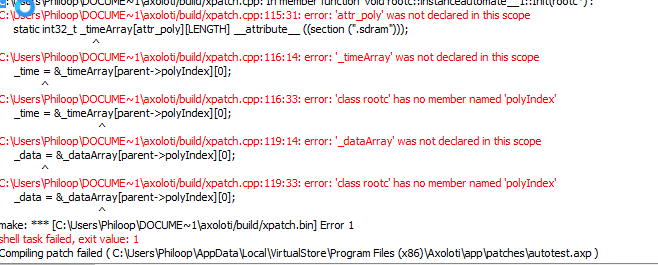

Wow really awesome  Going to read it all and check it out after kids are put to bed tonight....
Going to read it all and check it out after kids are put to bed tonight....
Thanks, mate

Wow really awesome Going to read it all and check it out after kids are put to bed tonight....
Thanks, mate
Finally had time to test it. It works very well. Huge thanks, @thetechnobear. Didnt expect custom object  Cool. yeah, it probably cosumes less DSP than making it from many objects.
Cool. yeah, it probably cosumes less DSP than making it from many objects.
I connected a square LFO to the gate input AND connected end from automate object to the square LFO reset. Then you have a continuos recorder. If I dont connect the end to square LFO reset in, it only records and plays back when the square is up(or down, sorry dont remeber right now, but it is either up or down that records). And also set buffer of automate object to 128.
The record should be only dependent on 'mode'
And it will only play or record of the gate is up, and only till it reaches the end.
Note: for record mode- end is set, when it gets to the buffer end OR you take the gate low. For play - end is set when it reached end of recording (not buffer!) or you take gate low.
Reset, just starts from beginning... I don't think I tested for record, but I'd probably say it should start from beginning
Note: you need to reset after both record or play, their is no implicit reset, the idea being you could 'pause' play or record and then continue.
That's what I'd expect at least....
The only undefined state ( ok it's not undefined, more perhaps not intuitive) , is switching modes - I only really tested switching modes then doing stop, mode switch , reset then start.
I'd have to think what the correct behavior is for this, depending if running or not. I think probably it should do an implicit reset, and keep running mode as is.
As i mentioned the looping/running is intentionally under user control, as often this will want to be sync'd to a master clock etc.
Sounds especially with a clock this would really usefull.
I tried to load the patch, but i get

hmm
Obviously, I don't get this error ( otherwise I wouldn't have posted it :))
I assume this is with the example patch ,any other errors?
To me it looks like your probably not running the latest version of the firmware etc, as I think the poly index stuff was changed to fix tables which had a similar issue.
@jaffasplaffa as you have it working, are you running the dev version or 1.03 ?
( it's possible it only works on dev version, no worries there will hopefully be a new release soon )
actually I mean the version number shown in the GUI. (Help / About) , latest is 1.03
but I always run a dev build (and its moved on a reasonable amount since 1.03) , so it could be Ive got changes not released yet... which is why I was interested if Jaffa (who had it running) was running the release build or not.
as I said, I really suspect its relying on a fix thats was added a while ago for tables... as its doing a very similar thing.
unfortunately there are no 'pre-releases' for windows, so you may have to wait for the next release, which I hope wont be too long now.
Yes, I have the same errors, with the same firmware. I tried to update to the lastest build (using what I found on Git and JDK,), but I got stuck when it said I had a Firmware CRC mismatch, and couldn't update the firmware :
Firmware version: 1.0.0.1, crc=0xFB45859B, entrypoint=0x20011000
Firmware CRC mismatch! Please flash the firmware first! Hardware firmware CRC = FB45859B <> Software CRC = Please compile the firmware first finished loading objects
Link to firmware CRC Please compile the firmware first
can't read flasher, please compile firmware! (file: H:\axoloti-master\axoloti-master\firmware/flasher/flasher_build/flasher.bin )
I have no folders in the axoloti-master\firmware/flasher/ folder.
So I gave up, hoping someone else would come up with the problem
My working version (but not for this object) is 1.0.3-0-gc248736
Did you compile the firmware first?
did it compile successfully?
Sorry I don't really do windows, but I know the Mac OS X/Linux scripts work ' out of the box' , and windows should as well
@thetechnobear No, I can't seem to compile the firmware, It says 'make' is not reconized, and I assume it's something a bit too geeky for my small technical level. Don't worry about it, I can wait for the next updates, I was just impatient for this object and gave it a try.
Thanks anyway, you're doing a great job
If you haven't , you need to run platform_win/build.bat and follow instructions, this will setup the build environment.
( needs to download a few things etc)
I'm getting further... Still doesn't work (now get stuck compiling the patch), I'm sure I messed up with the different builds I have now installed. I'll spend more time with it, but I've gone back to the release version for the moment, needed to get some patching done.
Thanks anyway, I'm sure I'll get there soon (and I'm starting to understand a bit more)
I use a version I build from Github a few weeks ago. On Mac.
Firmware ID: 58DE7602
Firmware version: 1.0.01, crc=0x58DE7602, entrypoint=0x20011000
The patch works here...
Yeah or some LFOs that is syncable to ppq. That could solve the sync to clock problem.
why would you not just use 24ppqn (or 6) output from a clock to trigger the reset , and therefore you will be in sync?
the 24ppqn output is a simple sync'd counter, so as I did on another thread you can divide this, and then run into another counter, so you can get bars/beats, or what ever divisions you want,
using this you could then have a control which forced the modulation to loop every 4 bars (or whatever)
if you want modulations in sync, which is not really what this was designed for... which was more 'live performance', then that is a different thing, thats about quantising... could easily be added to this object (its simply a matter of 'quantising the clock') but you can also quantise externally to the object (either on input or output, depending on your needs really)
the trick with all these things, is not to try to get one component to do everything, rather to give it the inputs that allow other things to drive it.
again on another thread, I said, I think we could do with a clock thats a bit more a musically oriented (rather than time/samples) , with tempo input, and bar/beat outputs... i think if it has external inputs (for midi sync, and perhaps tempo 'detection') , it probably would be close to what most people 'expect' to find and have been attempting to do with existing objects (which is possible)
its trivial to write, just a matter of finding the time to get around to writing it
Yes it only records when recording is turned on.
That is why I connected the "end" of the loop object to the "Rst in" on the square lfo that I use for the gate input . Cause then the recorder will restart everytime it reaches the end of the "up" and starts over. If you use lfos as clock this works pretty good.
Still no idea why you think an LFO is necessary.
But hey, what ever works for you... I'm sure you have your own reasons
Well at first there was a toogle connected to the gate input it didnt record here. Then I tried with a sq lfo and that worked...I probably did something wrong to start with... So I just continued using an lfo. Maybe I'll try without again.
EDIT just tried again and it still doesnt record when the toggle is connected to the gate input. Atleast I am not sure how it should react. I am looking for recording something and then loop it in sync with some other sequencers. And for this connecting an lfo to gate works well.
I also tried with midi clock and that also works.
THough I might add It had crashed Axoloti software a few times here.
This is great and handy!!
I experience a problem recording note-numbers:
The last note recorded is most of the times wrong...
Any ideas?
Thanks!!
bumping this as I'm working on a simple looper event/note sequencer.
I posted here
but it seems to me the object by @thetechnobear is a good way of doing it.
I'm having hard time understanding the playback though.
I made this patch and it doesn't seem to playback recorded events.
I'm a bit stucked.
seqtestNEW2.axp (10.4 KB)